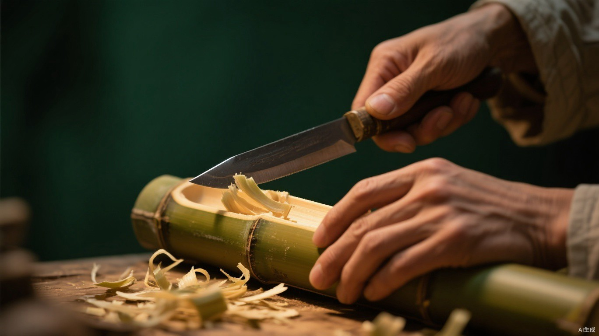

留 青 竹 刻 的 制 作 工 艺
SIX STEPS OF LIUQING CRAFT
一件留青竹刻，从山间毛竹到案头珍品，须经 选竹、整形、描图、切边、铲底、成品 六道工序。 少则数月，多则经年。下面这座「数字刻坊」，请你亲自执刀，把这六步走完一遍。
INTERACTIVE CARVING STUDIO · 点击步骤或竹片，亲手"刻"一件留青
竹青鲜嫩，色淡质软
太嫩 · 易起毛青筠致密，色泽匀净
推荐 · 上品竹青厚硬，色深多斑
太老 · 难下刀提示：在同一浏览器多开几个标签页，即可体验真实的跨标签协作互动。